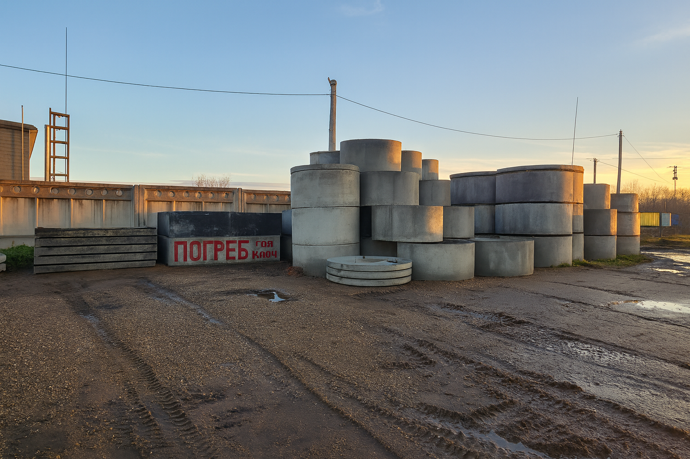
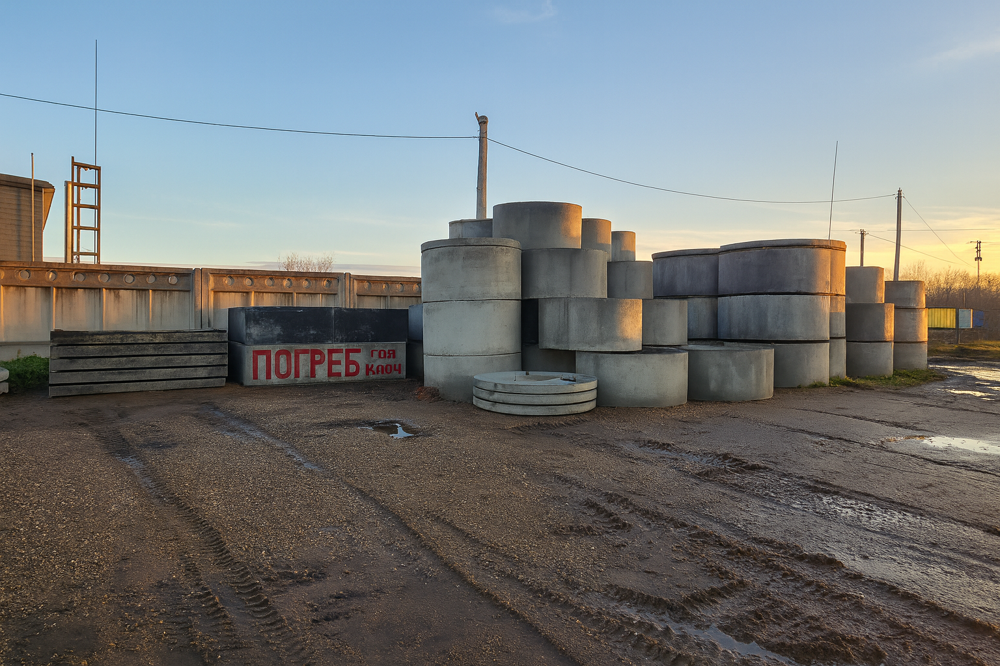

О цехе ЖБИ в г. Туймазы
Наш цех работает в г. Туймазы с 2008 года и специализируется на производстве и поставке железобетонных и стеновых материалов для частного и малоэтажного строительства. На фото слева — наша производственная площадка, склад готовой продукции и подъездные пути для удобной погрузки.
Наша продукция
Мы изготавливаем керамзитные блоки для несущих и самонесущих стен, перегородок и хозпостроек:
- стеновые керамзитные блоки 4-х, 3-х и 2-х пустотные размером 190×390×190 мм;
- стеновые керамзитные блоки 6-ти пустотные размером 290×390×190 мм;
- перегородочные блоки размером 120×390×190 мм.
Для устройства фундаментов и технических помещений производим и реализуем фундаментные блоки ФБС типоразмеров: 24.4.6, 24.3.6. 12.4.6, 12.3.6 9.4.6, 9.3.6.
Отдельное направление — железобетонные кольца для колодцев и септиков:
- ж/б кольца и крышки диаметром 2 м, 1,5 м и 1 м;
- доборные кольца диаметром 0,6 м высотой 0,5 м — для наращивания и ремонта существующих сооружений.
Готовые железобетонные погреба
Мы выпускаем готовые железобетонные погреба размером 2,25×3,25×0,7 м в двух вариантах исполнения:
- с верхним спуском, без встроенных ступенек;
- с лестницей сбоку — удобный боковой спуск внутрь погреба.
Такие решения позволяют быстро получить надёжное место для хранения заготовок и овощей без длительных земляных и бетонных работ на участке.
Сопутствующие материалы
Помимо собственных ЖБИ мы предлагаем сопутствующие материалы, чтобы вы могли закрыть основные потребности по строительству в одном месте:
- кирпич простой и облицовочный для кладки и фасадных работ;
- газоблоки для тёплых ограждающих конструкций и перегородок;
- евроцемент в мешках по 50 кг и в биг-бегах — для бетона, растворов и стяжек;
- песок, гравий, глина — с доставкой от 3 м³ до вашего объекта;
- керамзит в мешках и россыпью — для лёгких бетонных смесей и утепления.
С кем мы работаем
Наши клиенты — частные застройщики, строительные бригады, фермерские хозяйства и небольшие подрядные организации. Мы помогаем подобрать продукцию под конкретную задачу, рассчитать необходимый объём и организовать доставку на объект.
Цех ЖБИ в Туймазы — это собственное производство, понятные сроки, внимательное отношение к каждому заказу и продукция, которая служит десятилетиями.
Связаться с нами можно по телефону 8-905-004-04-88 или через WhatsApp: написать сообщение.